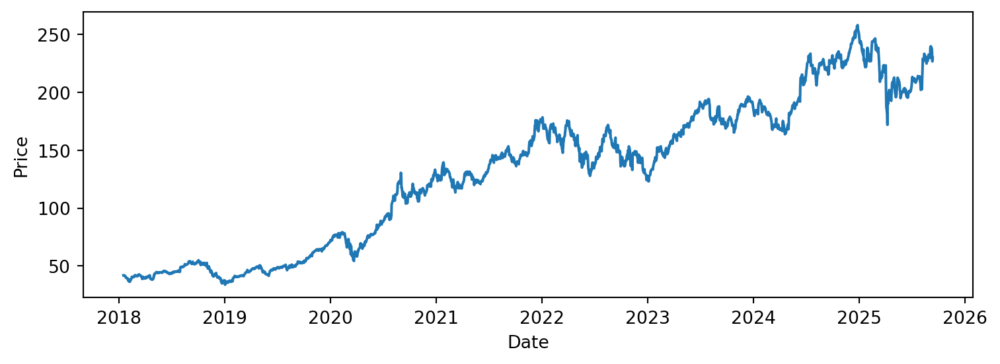
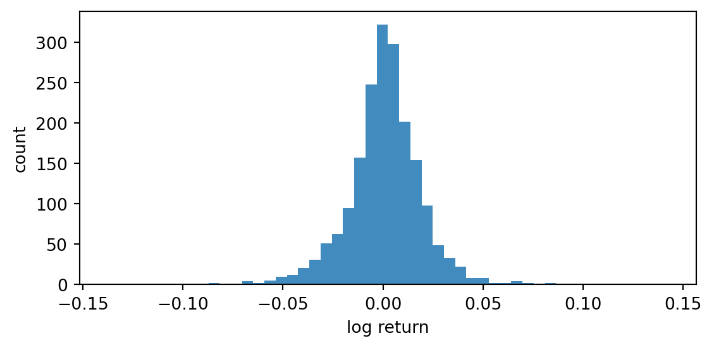
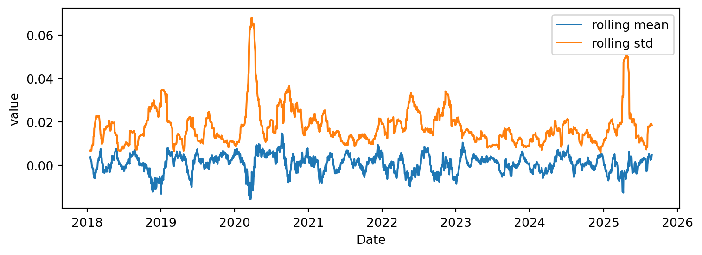

# Default values (overridden by -P at render time)
SYMBOL = "AAPL"
START = "2018-01-01"
END = ""
ROLL = 20Stock EDA
Educational use only — not trading advice. Data pulled via yfinance (Aroussi 2024).
This page is parameterized; see the Parameters section for usage.
Setup parameters if using Python
Setup
import pandas as pd
import numpy as np
import matplotlib.pyplot as plt
import yfinance as yf
from pathlib import Path
# SYMBOL = params.get("symbol", "AAPL")
# START = params.get("start_date", "2018-01-01")
# END = params.get("end_date", "")
# ROLL = int(params.get("rolling", 20))
if not END:
END = pd.Timestamp.today().strftime("%Y-%m-%d")Download and tidy
try:
data = yf.download(SYMBOL, start=START, end=END, auto_adjust=True, progress=False)
except Exception as e:
# Synthetic fallback
idx = pd.bdate_range(START, END)
rng = np.random.default_rng(42)
ret = rng.normal(0, 0.01, len(idx))
price = 100 * np.exp(np.cumsum(ret))
vol = rng.integers(1e5, 5e6, len(idx))
data = pd.DataFrame({"Close": price, "Volume": vol}, index=idx)
df = (data.rename(columns=str.lower)[["close","volume"]]
.dropna()
.assign(log_return=lambda d: np.log(d["close"]).diff()))
df["roll_mean"] = df["log_return"].rolling(ROLL, min_periods=ROLL//2).mean()
df["roll_vol"] = df["log_return"].rolling(ROLL, min_periods=ROLL//2).std()
df = df.dropna()Price over time

As shown in Figure Figure 1, prices vary over time with changing volatility.
Return distribution

Figure Figure 2 shows the return distribution; many assets exhibit heavy tails [Hyndman and Athanasopoulos (2021), pp. 20–21].
Rolling statistics (window = {params.rolling})

Summary table
| n_days | start | end | mean_daily_ret | std_daily_ret | ann_vol_approx | |
|---|---|---|---|---|---|---|
| 0 | 1924 | 2018-01-17 | 2025-09-11 | 0.000893 | 0.019654 | 0.311994 |
See Table Table 1 for overall statistics.
Data dictionary
| column | dtype | description | |
|---|---|---|---|
| 0 | close | float64 | Adjusted closing price. |
| 1 | volume | int64 | Trading volume. |
| 2 | log_return | float64 | log(Close_t) − log(Close_{t−1}). |
| 3 | roll_mean | float64 | Rolling mean of log returns (window=20). |
| 4 | roll_vol | float64 | Rolling std of log returns (window=20). |
Parameters
This page accepts parameters: symbol, start_date, end_date, and rolling. You can re‑render with:
quarto render reports/eda.qmd \\
-P symbol:MSFT -P start_date:2019-01-01 -P end_date:2025-08-01 -P rolling:30References
Aroussi, Ran. 2024. “Yfinance: Yahoo! Finance Market Data Downloader.” https://github.com/ranaroussi/yfinance.
Hyndman, Rob J., and George Athanasopoulos. 2021. Forecasting: Principles and Practice. 3rd ed. https://otexts.com/fpp3/.